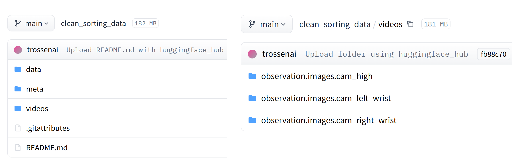

Hugging Face Storage¶
This section explains how the dataset is stored and shared using Hugging Face.
Purpose¶
Hugging Face is used to store the recorded color sortation episodes in one central location.
This makes the dataset easier to:
- Share with team members
- Access during training
- Update later
- Keep organized
- Use for future experiments
Before Uploading¶
Before uploading to Hugging Face, check:
- Dataset folders are organized correctly
- Files are in the correct color folders
- Poor-quality episodes are removed
- File names are understandable
- Dataset description is ready
Upload Steps¶
- Open Hugging Face.
- Log in to your account.
- Create a new dataset repository.
- Choose a suitable dataset name.
- Upload the organized dataset folders.
- Add a dataset description.
- Add useful tags.
- Verify that all files are uploaded correctly.
- Share the dataset link with the team.
Recommended Dataset Description¶
Paste this on the Hugging Face dataset page:
This dataset contains color sortation demonstration episodes collected using the Trossen Mobile AI Robot. The episodes include red, blue, and green colored blocks with different size and position variations. The data was collected through teleoperation and is intended for robot training and testing.
Recommended Tags¶
- trossen_mobile_ai_stationary
- color_sortation
- color_sortation_datasets
- robot_learning
- demonstration-data
- trossen-mobile-ai
Hugging Face Screenshot¶
